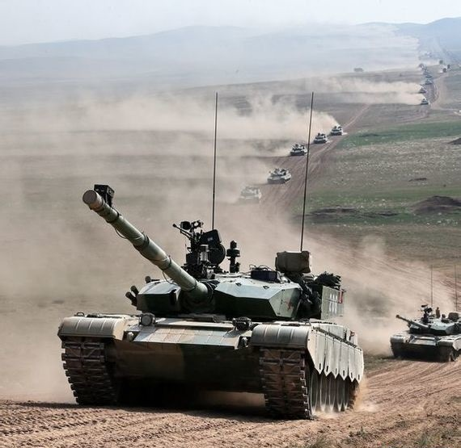
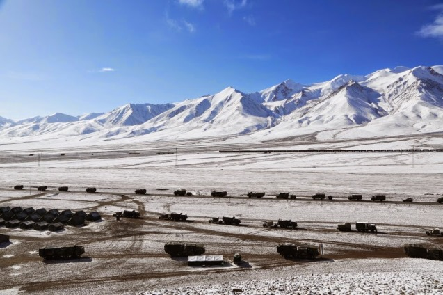

【陆军】【防空】习近平的军事改革和共军的实兵对抗
2014-07-24 20:04:00
原文网址：https://blog.udn.com/MengyuanWang/108908615
习近平接掌中共中央军事委员会主席已近两年，在人事上，其对共军改革之大刀阔斧的程度不下于王岐山在中纪委对文职干部的整肃；首先积极提拔清廉能打仗的将领，并且无上限地追诉贪腐的前任将官，连上一任的军委副主席徐才厚都在本月初被逮捕，另一个军委副主席郭伯雄被捕也只是时间问题。
在武器研发的投资上，不单是对军方的需要有求必应，就连军方原本嫌贵的东西，都由军委主动拍板採购，其中最令人瞩目的就是我在前文提到的017号航空母舰：本来中共海军计划在整个2010年代有一艘辽寜舰（016号，001级）做为测试和训练之用也就够了，可以等到2020年再建002级，也就是现称的018号，可是习近平坚持在2020年前必须有两个完整可用的航母戦斗羣，所以017号（001A级）在去年八月紧急上马，再加上配套的J15戦机/055级大型指挥驱逐舰（其实应该是巡洋舰了，可是共军还是讲究孙子兵法的“形人而我无形”，所以会继续搞这些“良贾深藏若虚”的把戏）/052D级防空驱逐舰/057级全电反潜护卫舰/093G级核子动力攻撃潜艇/全新的超大型补给舰，未来六年为了这个额外的航母戦斗羣总投资将达到一万亿新台币以上，耗费之大，令人咋舌。不过既然上级如此慷慨，中共海军当然也就欣然笑纳。在空军方面，銭像洪水一般涌向共军的最后几个短板，尤其是喷射引擎，这一波的总投资约五千亿新台币；李克强在上个月甚至宣布将把2016年开始的十三五和2021年开始的十四五计划串联起来，主要就是针对喷射引擎这种研发周期长达15至20年的工业。连在地上爬的陆军，也阔气了起来：就在去年年中，大陆的几家加工钛合金的公司忽然收到了通知，要求提供报价以供共军考虑试產中国版的M777式超轻型榴弹炮；这么奢侈的装备（钛基的榴弹炮比钢制的贵3到5倍！），只在两年前都是共军作梦不敢想的。
有了好的装备，下一步当然是加强训练。第一个推行现代化高强度训练的中共将领是习近平在军委会的新任副手许其亮；2011年底，他在空军司令员任内创办了“金头盔”竞赛，完全仿效美国空军的实兵演习，让飞行员进行自由对抗，这对将中共空军的戦技训练提升到二十一世纪的水平起了很大的作用。海军自去年起，也进行了多系列的实兵演习，包括去年在西太平洋的实弹射撃训练；据称其飞弹消耗之多之贵，前所未有；今年的实弹射撃训练刚好是现在从七月25日进行到八月1日，因为参加的舰艇太多，必须分在四个海域（渤海海峡、黄海北部、东海、北部湾亦即南海的东京湾）同时举行。
不过我今天想提的重点是中共陆军在最近进行的两个系列的实兵对抗演习：首先是在内蒙古朱日和（在北京西北400公里的戈壁沙漠中）举行的“跨越2014”演习，两个月内已进行了六场。去年的“使命行动2013”和今年的这个“跨越2014”的差别在于前者是照剧本练的，如同国军的“汉光演习”，所以主要练的是行军和作业；而后者则是两个加强旅之间的自由对抗，考験的是戦术和戦技。它和国军的师对抗或旅对抗又不同：广泛使用了雷射模拟器和自动发烟头盔，此外有一方（“蓝军”）是新组建的专业假想敌部队，红军则为各军区派出标准建制的机械化步兵旅轮流出戦。这很明显地是仿效美军的专业OPFOR（OPposing FORce，即“假想敌部队”）：驻地在加州Fort Iwin的第11装甲骑兵团（11th Armored Cavalry Regiment，名字叫团，其实是一个超级旅，其第一和第二营-squadron-为专业OPFOR)。如同美军的OPFOR，这只专业“蓝军”也是旅级的单位，番号是独立195装步旅；11装骑团有一个营的编制和戦术完全仿效中共陆军最精锐的第38集团军，而195装步旅则刚好反过来模仿美国陆军最精锐的第四师。下基地对抗11装骑团的美军部队固然几乎都全军覆没，而在至今这六场“跨越2014”演习里也只有第四场的一个来自渖阳军区第16集团军的机步旅靠着极佳的运气而険胜。红军会打得这么辛苦当然是故意的：蓝军不但有絶对的制空权，优势的无人侦察机和武装直升机，超强的电子干扰能力，随手捻来的核生化打撃手段，最重要的是蓝军的指挥系统已经完全信息化，数位连线到每一个连，旅长在萤幕上可以实时综观全局，也可以用键盘直接下令，这在可见的未来仍将代表着全球陆军作戦的最高标准，而看来共军将以此标准来反復训练它的部队。
两名刚刚“阵亡”的红军士兵

红军在前线集结
红军的99式坦克纵队，注意炮管前端上方的演习用雷射模拟器
朱日和已经很热闹了，但是同时在甘肃省山丹县共军还举行了另一个系列的旅对抗，也就是“火力2014”，专门来检验军区或集团军直属支援部队的戦力。计划共有十场，目前第一场刚结束，红军是今年五月才成军的西藏军区直属651独立防空旅，配有红旗16中程防空导弹。红旗16由海军装备的海红旗16改进而来，其作用等同俄军的Buk导弹（就是刚刚射下MH17的那玩意儿），但是性能新了一代。蓝军则由中共空军的SU-30扮演。结果红军经过几千公里铁公路行军后，打了不到一天就一败涂地，带着83个检讨事项回家。下一个上场的是南京军区陆军第1集团军远程火箭炮兵旅。说起远程火箭炮，共军的确独步全球，拥有GPS制导，射程为150，200，300和400公里的全系列火箭炮。这些火箭炮打遍全台湾绰绰有余，又比东风导弹价廉好几倍，共军何必舍此不用而用上射程至少600公里的东风？
651旅在西藏 第1集团军远程火箭炮兵旅，背景是PHL03十二管火箭炮
第1集团军远程火箭炮兵旅，背景是PHL03十二管火箭炮
1 条留言
不同于西方谁是总统，军队就对其直接效忠，这个是法律决定的。大陆的政治体制就决定了，他的军事改革会让军队在“他的任内”的战斗力特别强，因为在改革之后的是新生的军队，新生之后第一眼看到的总是父亲。而这个人一走，下个人还要看他的配合配合出战斗力。而且现在看几个下一个都没有习“与生俱来的”军方背景。
现在的国际形势尤其是东海美日的压迫日渐紧张，那么万一风云突变，擦枪走火在国际版图任何一地点引发战争，习主席会不会有个第三个五年？我想如果战争爆发，大陆很多军方将领会自己要求他留任。
不过我觉得他的建军，仍然是以被动吓阻为目的，不是为了主动出手。